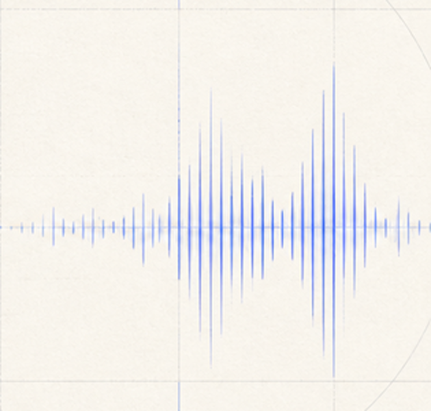

Audio effects
Modeling, estimation, control, and transfer of EQ, dynamics, distortion, reverberation, and other processors.
Open research index
A structured index of open-source projects, models, datasets, and recent research for intelligent audio effects and music production.

The index follows production tasks rather than publication year. Each area collects implementations, pretrained models, datasets, and evaluation resources where available.
Modeling, estimation, control, and transfer of EQ, dynamics, distortion, reverberation, and other processors.
Embeddings and descriptors that capture effect transformations, production style, and perceptual attributes.
Automatic, reference-guided, and controllable systems for balancing and processing multitrack music.
Systems for loudness, dynamics, tonal balance, reference matching, and final-stage production.
Benchmarks, listening-test protocols, production metrics, and reproducibility tools.
Spatial mixing, positioning, rendering, and immersive production will be incorporated as the index expands.
Entries distinguish source availability, checkpoints, licenses, and reproducibility. Projects are added after their public resources have been checked.
| Project | Area | Available | License | Verified |
|---|---|---|---|---|
| Loading verified projects... | ||||
A reproducible evaluation framework for automatic music mixing. The repository link will be added when the project is publicly available.
Recent work is discovered from public scholarly metadata, screened for direct relevance, and added through a validated update.
A scheduled workflow checks new papers weekly. Candidate metadata is validated before a website update is proposed.
Loading papers...
This first version establishes the scope and data structure. The catalogue grows through direct verification rather than unreviewed bulk collection.
Audio effects, representations, mixing, mastering, datasets, and evaluation.
Environment, inference path, checkpoints, datasets, and known limitations.
Spatial audio and other production-oriented tasks.